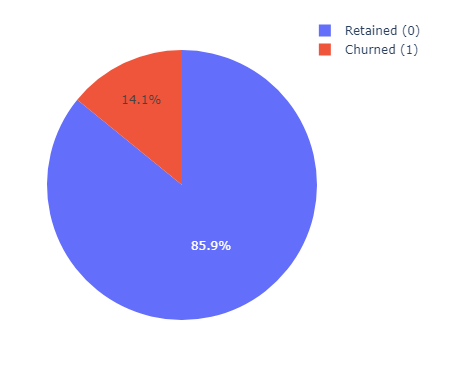
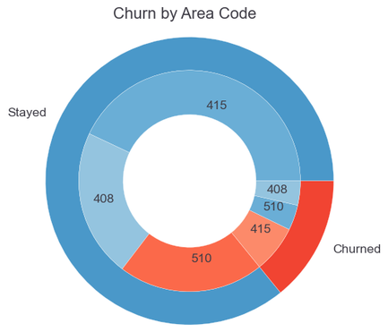
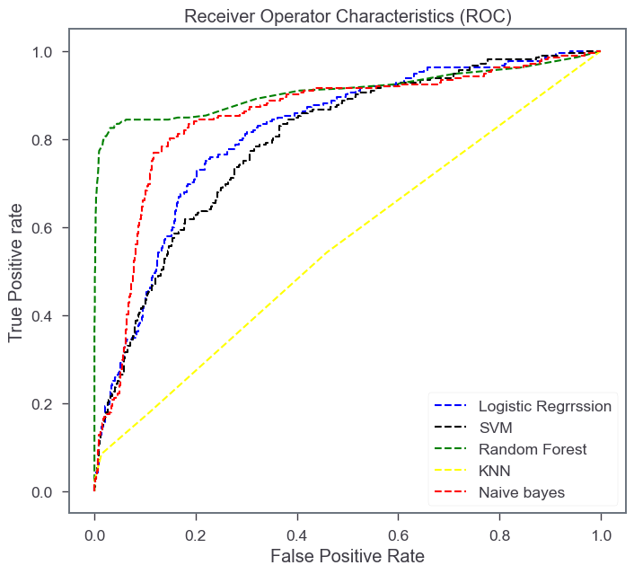

Preventing Customer Loss with ML
Context
Predicting churn rate is crucial for these companies because the cost of retaining an existing customer is far less than acquiring a new one. Machine learning helps companies analyze customer churn rate based on several factors such as services subscribed by customers, tenure rate, and the usage.
The end goal of this project is to identify customers who are likely to leave a company, so that the company can take proactive steps to retain those customers.
Data I used:
- Customers who left within the last month – the column is called ‘class’
- Services that each customer has signed up for – international plan, voice mail plan, etc.
- Customer account information and usage – how long they’ve been a customer, how much did they use each service
- Their postal code
- And finally, the number of customer service calls they made during this period
There were a total of 5000 entries in the dataset (source).

Exploratory data analysis
During the EDA phase, I mainly asked the following three questions:
- Is the data balanced in terms of both classes (0 for customer who stayed, 1 for who churned)?
- How many distinct areas did the customers come from and was there a specific area which showed a pattern?
- Are there any redundant columns which may be removed?
Answer to Q1:
- Churn data is typically imbalanced where the minority class (the number of customers who churn) is often much smaller than the number of customers who do not churn. Here the class distribution is about 1:7 which is significant but not severe. 
Answer to Q2:
- There were 3 unique area codes (415, 408, 510). These were almost equally distributed in both classes. 
Answer to Q3:
- Removed the 'phone_number' column.
- Since total day minutes and charges are highly correlated (more minutes used mean more charge), I removed total minutes column for all categories (day, evening, etc).
Models
I implemented the following 5 classification algorithms using the sci-kit learn library:
- Logistic Regression
- Support Vector Machine
- K-Nearest Neighbors
- Random Forest Classifier
- Naïve Bayes
I compared them based on evaluation metrics such as precision, recall, and F1-scores, as well as ROC curve and AUC scores. These results are based on the test set of 1500 values (1280 + 220). The reported values are for positive class, wherever applicable.
| Classifier | Precision (%) | Recall (%) | F1-score (%) | AUC score |
|---|---|---|---|---|
| Logistic regression | 60 | 19 | 28 | 0.81 |
| Support vector machine | 64 | 12 | 20 | 0.80 |
| Random Forest | 95 | 70 | 80 | 0.91 |
| K-Nearest Neighbors | 50 | 8 | 15 | 0.56 |
| Naïve Bayes | 50 | 38 | 43 | 0.85 |
Best classifier and interpretation of results
The Random Forest classifier came out to be the best classifier as evident from the table and the follwoing ROC curve.
For the chosen classifier, the precision is 95%. This indicates that out of all the customers that the model predicted to leave, 95% of them actually did. This is good precision. The company can target those customers to retain those customers.
Similarly, of all the customers who did leave, the model predicted the outcome with 70% accuracy (recall). This means it is missing out 30% of leavers, which could be a big loss in terms of loss.
We need to improve the recall score for our classifier for which analysis precision-recall tradeoff.
The Precision-Recall tradeoff
I plotted the precision-recall graph for the random forest classifier and identified our current point.

Improving recall required sacrificing some precision. I wrote a small function to obtain at least 83% recall:
# Calculate the recall and precision at DEFAULT setting
recall = recall_score(y_test, y_pred)
precision = precision_score(y_test, y_pred)
# Adjust the threshold to improve the recall
desired_recall = 0.82 #looking at the precision-recall curve, this seems like a good point
while recall < desired_recall:
threshold -= 0.05
y_pred = (y_prob >= threshold).astype(int)
recall = recall_score(y_test, y_pred)
precision = precision_score(y_test, y_pred)
optim_threshold = threshold
print('At the threshold of %0.2f' %optim_threshold, ', the final recall is : %0.3f' %recall, 'while the precision is: %0.3f' %precision)
# At the threshold of 0.30 , the final recall is : 0.835 while the precision is: 0.808
At the cut-off of 0.3, I got a sweet-spot where both precision and recall were above 80%. This was chosen as an acceptable tradeoff.
But which features are the best predictors?
As a last step, I wanted to see which factors contribute the most to the prediction of customer churn. It turned out the total day usage was the top predictor of churn, followed by number of customer service calls.